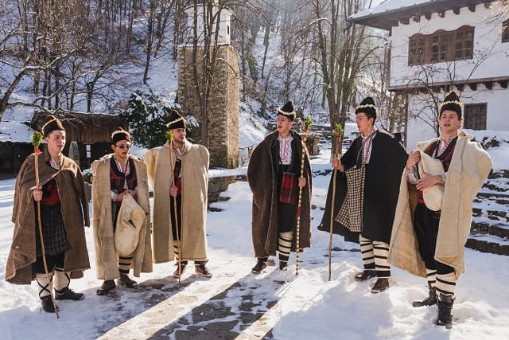

Bulgaria is a country with a surprisingly rich musical tradition. Wonderful Bulgarian melodies, created over hundreds of years, sing of heroes, and daring men (gaiduks and junks). They reflected the spirit of the struggle for the freedom of their native land. Another important theme of Bulgarian folklore is the fight against the elements and water extraction. The fact is that after the spring floods in Bulgaria, droughts often occurred, and this climatic feature gave rise to a particular attitude of local residents to water. Over various sources and springs in Bulgaria, beautiful stone structures were erected, and decorated with carvings, expressing the respectful attitude of the people to the water element. There are many interesting customs associated with water. Water for the indigenous people has always been associated with happiness and good luck. Until now, Bulgaria has a tradition of pouring water under the feet of a person who goes on a long journey or starts a new vital business. It is believed that thanks to this, any undertaking will be easy. If in other Slavic countries, they say: “it will go like clockwork”, then in Bulgaria, it is customary to wish: “let everything go like clockwork”. Now, when a new institution is opened, when the traditional ribbon is cut, water is continuously poured. Many Bulgarian traditions are based on mutual help and support. I would like to mention some important Bulgarian traditions:
Custom is celebrated on January 1st. Its origin is difficult to determine - some historians, for example, associate it with the ancient Bulgarians, and others with the pagan times of Rome. The survakane ritual is done by children aged 5 to 12 years. Each child has their own raw dogwood sprig decorated with different things, such as multi-coloured cotton, popcorn, and walnuts. With their branches, they touch/hit their relatives’ backs while reciting other health rhymes. After that, they receive small gifts. This is one of the most common traditions in Bulgaria and is practised by most families.
This is the most popular and widespread Bulgarian tradition. The legend of “Martenitsa” dates back to the foundation of the Bulgarian state in 681. A dove messenger with a white thread was sent by one of the sons of the old king - Asparukh - to his brother accordion to indicate that a new land had been found. When Bayan received the message, he was pursued by enemy Khazar tribes. An arrow hit him, and his blood dyed the thread red. Bayan sent back the dove, and Asparuh managed to come with his troops and save him. He then ordered more red and white lines to be made and placed them on his soldiers. It happened on March 1st. Since then, every year on March 1, Bulgarians give each other such a “martenitsa” with wishes of health and good luck. “Martenitsa” is worn until the beginning of spring, when it is removed and placed on newly blossomed trees.
This is one of the oldest Bulgarian traditions, which is currently preserved only in a few villages on the Strandzha mountain. Historians associate this with the ancient Thracian traditions and their cult of the Sun. The dance itself is passed down from generation to generation only in certain families. Interestingly, the “nestinari” dancers do not receive any injury when entering embers, so scientists say this may be due to their genetics. The people themselves claim that this is because of their strong faith and good morals. They believe that you can’t learn to be a nestin if you weren’t born that way. The peak of “nesting” dances falls on the feast of Saints Constantine and Helena. The dancers enter the surrounded coals in a trance state and move in it with small steps in the shape of a cross. In 2009, the Nestinari dance was included in the UNESCO Intangible Cultural Heritage List.
 The Koledari tradition is associated with Christmas and blessings for the coming year. “Koledari” are young men (women are not allowed) who gather in groups of 10-15 people. Each of them wears a traditional costume and wears a typical rogue. They go from house to house to sing songs for fertility, health and happiness, and after that, they receive small gifts from their hosts. This ritual is performed on the evening of the 24th or on the day of the 25th of December. Today this custom is well preserved and is more typical for small Bulgarian villages.